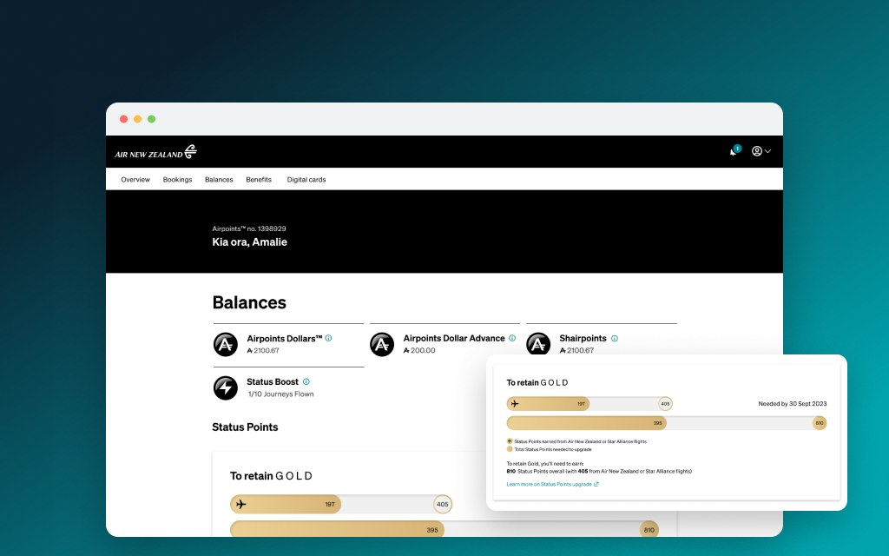
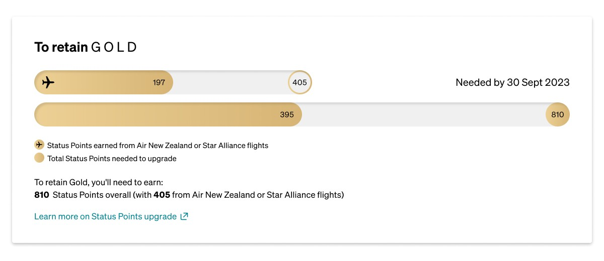

Air New Zealand: Airpoints Member Portal
A loyalty portal for 3.6 million members, designed around a rigid out-of-the-box platform.

Challenge
Air New Zealand’s Airpoints programme had over 3.6 million members, and the member portal was a critical touchpoint for anyone wanting to check their balances, track their tier or use their benefits. It had fallen out of step with newer parts of the programme, and it was being rebuilt on an out-of-the-box platform — iFly, from IBS. We were engaged to bridge the gap between Air New Zealand’s internal strategy and what that platform could actually do. Lifting loyalty was one of three company-wide strategic priorities at the time, so the portal mattered well beyond the design team.
Solution
A redesigned portal that aligned the iFly platform to Air New Zealand’s Unison Design System across balances, status points, benefits, activity, sharing and digital cards — delivered as a developer-ready Figma file covering every screen and component, plus a prioritised backlog of future improvements for the internal team to carry forward.
My Design & Approach
I was embedded at Air New Zealand as part of a Designit team, working alongside Sean, a UX strategist. Air New Zealand runs a tribe and squad model, so I sat in the Loyalty Tribe across the High Value Customer, Financial Products and Airpoints Products squads, and reported into the Design Chapter. Sean’s research and early exploration set the direction I designed toward, and he tested the work as it came together.
The process settled into six steps. Map the content requirements against what the out-of-the-box solution could hold. Wireframe the layout and information architecture. Build the UI within the platform’s constraints, customising components to align with Unison and stay consistent with Air New Zealand’s other products. Review with IBS and the product team to confirm feasibility. Iterate on the feedback. Then sign-off, where the BA updates the user story and marks it ready for compliance.
I worked across most of the portal on desktop and mobile: enrolment, the masthead and signed-in panel, notifications, status points and tier requalification, balance tiles, activity statements, Shairpoints, benefit cards, status hold, Elite Partner, vouchers and digital cards. I also mapped navigation across public visitors, non-members and members to find where the experience broke down.
Design Challenge
Design Challenge: Making Tier Requalification Legible
To retain your tier you needed a total number of Status Points, and a set portion of those had to come from qualifying flights. So a member could hit the overall total, see a bar sitting at full, and still not requalify, because the flight portion hadn’t been met. They had no way of understanding why they were stuck.
The platform made this harder rather than easier. iFly modelled tier progress as an either/or — two circular gauges with the word “OR” between them, one for segments flown, one for qualifying miles. Air New Zealand’s rule isn’t an either/or, it’s an and. Meanwhile the existing Air New Zealand web page used decorative graphics for retain and upgrade that were pretty but hard to read, and the app used plain text with no graph at all. Three different answers to the same question, none of them right.
The timing mattered too. Air New Zealand had run a series of tier status extensions from 2020 onward to stop members dropping a tier while the borders were closed. By the time this work was underway those extensions had ended and the border had reopened, so a lot of members were facing a real requalification for the first time in about three years, some with banked extensions still sitting in their accounts with their own expiry dates.
Sean had rough wireframes exploring the problem when I joined, and I picked them up and worked through what a clearer version might look like. I explored a few directions, including a single combined bar and a text-only version with no graph at all, and landed on two stacked bars, told apart by a plane icon rather than by colour. Instead of putting both on a shared axis, I scaled each bar to its own target — someone a quarter of the way to 1400 flight points and a quarter of the way to 2400 total sees two bars at the same fill, which is the honest answer to the question they’re actually asking. Splitting them was the whole point. One bar can be full while the other isn’t, and you can see that at a glance instead of staring at a completed bar wondering why you haven’t moved up. Underneath it, the rule restated in plain English, and the amount still to earn rather than only what had already been banked.

Result
Air New Zealand’s team received a developer-ready Figma file compiling every solution and component, alongside a prioritised set of recommendations for their backlog. The portal launched as an MVP with those improvements picked up by priority afterwards, and it’s live today with tweaks made since release. Usage numbers aren’t something I have visibility on, but the work resolved the core inconsistencies in the previous portal and gave the internal team a documented foundation to keep building from.
What I Learnt
The biggest one was about working inside a system you didn’t choose. Out-of-the-box functionality gaps are constant, and the lesson is to aim for a system that works for you rather than a system you work for — which in practice meant picking and choosing my battles, and being honest about which constraints were worth pushing back on and which ones I should design around and move past.
I also came to value the backlog as a design artefact. Being clear about what was achievable now versus what was genuinely worth solving next gave the internal team something to work from after the engagement ended.